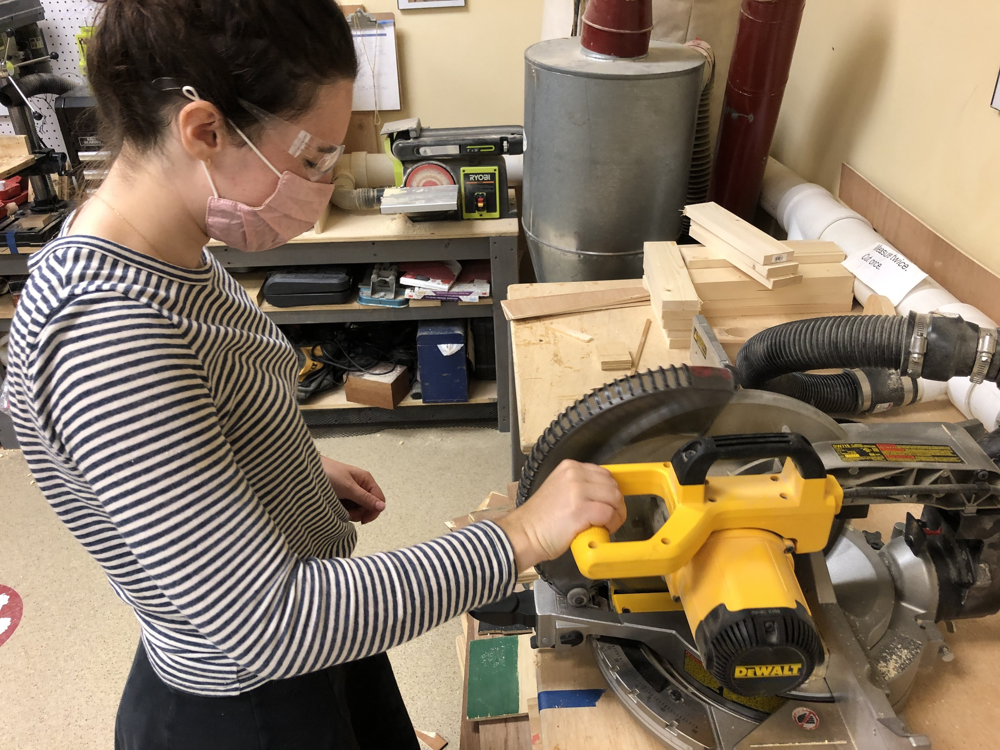
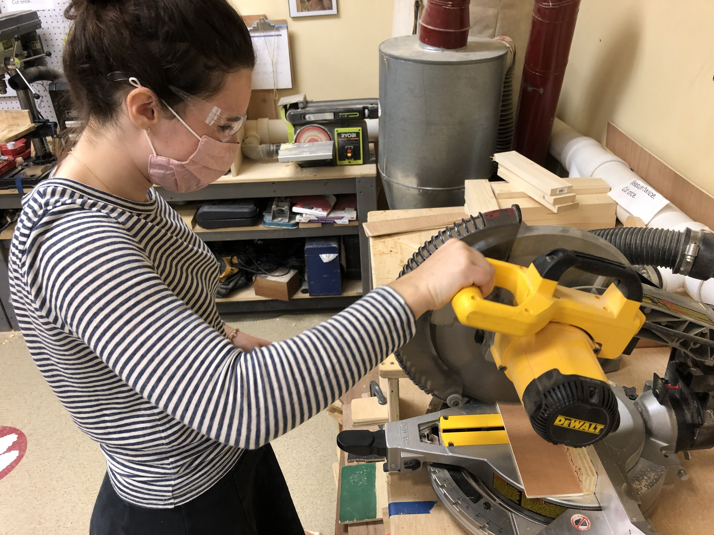
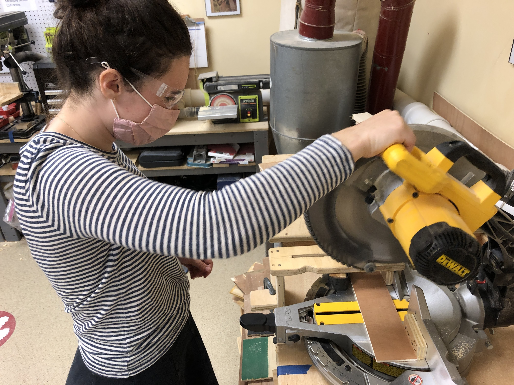
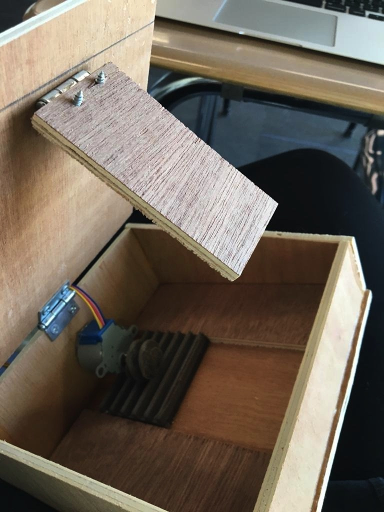
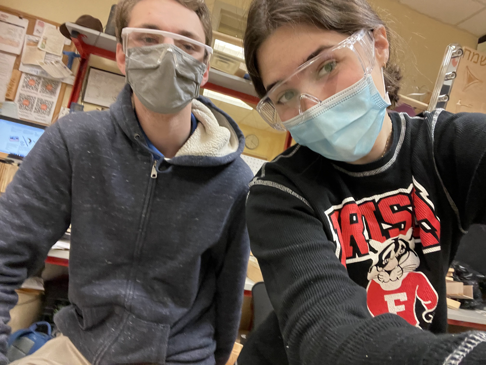
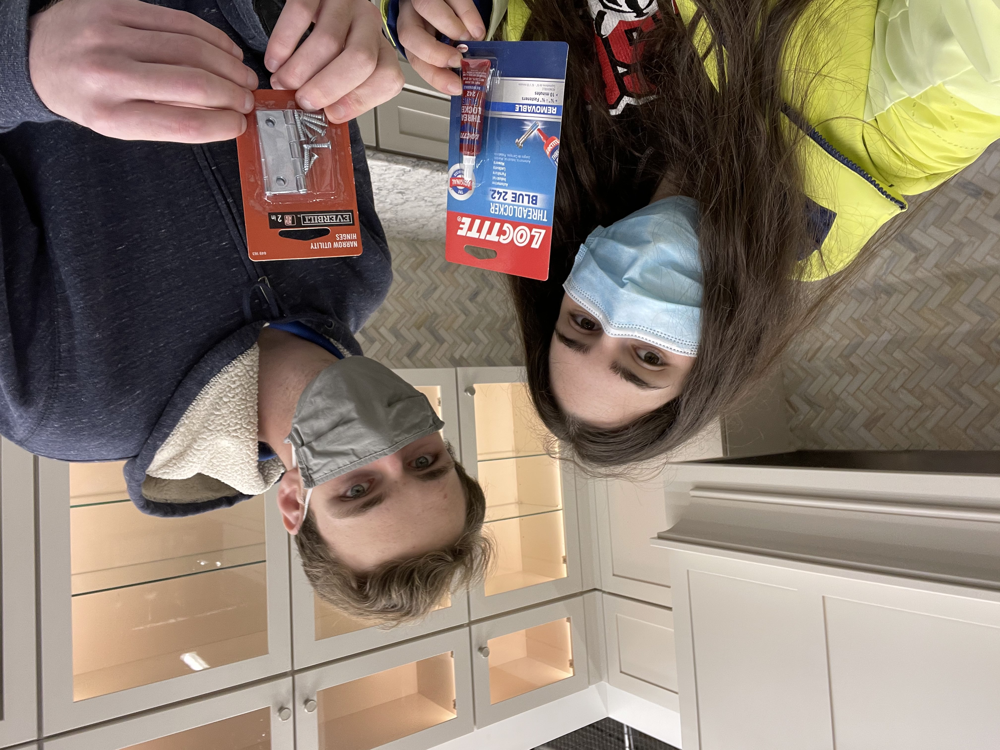
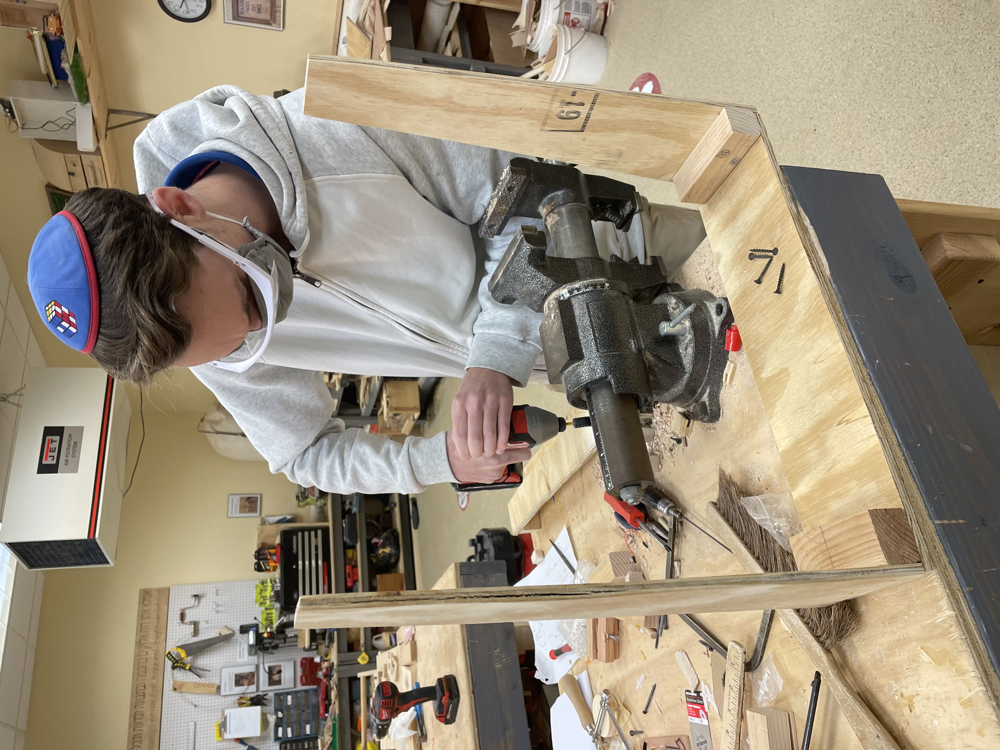
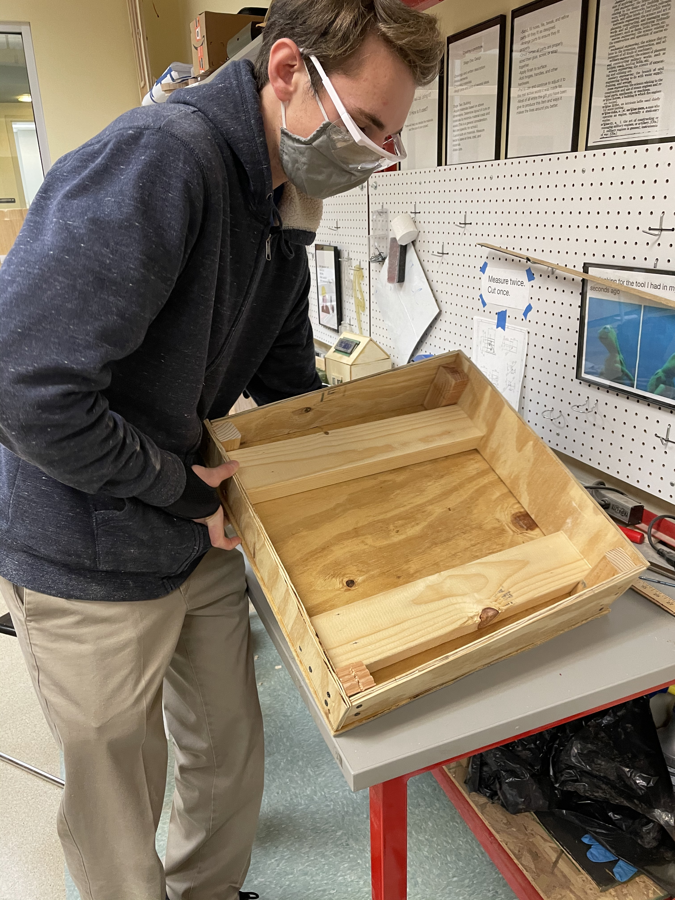
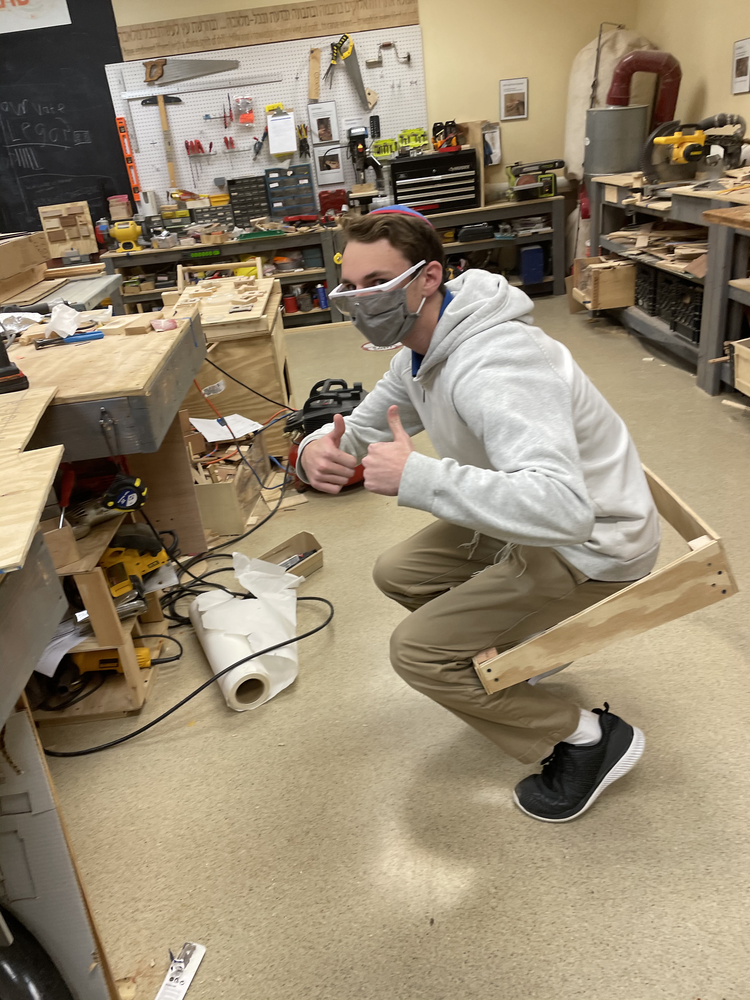

.jpg)
Often when an elderly person is bound to a wheelchair, they feel unstable if the wheelchair reaches even a slight incline or decline. There are several non-electric wheelchair seat “stabilizers” which are cushions with added support. However, after speaking with Jono’s grandfather who uses a wheelchair, we learned that even these special cushions do not always do the trick.
We wanted to create a high-tech solution to this problem by making a smart-cushion for a wheelchair. The cushion incorporates our knowledge of software and mechanical engineering. A chip/sensor on the cushion will sense tilt and trigger a motor to adjust accordingly.
We have also spoken to an architect who works for Bergen County and we learned a lot about the wheelchair accessibility laws. We specifically designed the cushion to adjust to the steepest angles of wheelchair ramps.
We used an accelerometer to detect the current angle of the wheelchair. We have a high torque motor to adjust to provide the movement to the cushion, a lead screw to convert that rotational motion into horizontal linear motion, and then two hinges to convert the linear motion into rotational of the entire cushion. In the code, we use exponential filtering to get smooth input values from the accelerometer, and a PID controller to get smooth movements from the cushion.
|  |  |  |  |
|  |  |  |

|
|  |

|
|
 |
#include <Wire.h>
#include <LiquidCrystal_I2C.h>
LiquidCrystal_I2C lcd(0x27,20,4);
//PIN VARIABLES
int pinDrain = 2; //The pin going to the solenoid that goes to the normal drain (for dirty water)
int pinRecycle = 4; //The pin going to the solenoid that goes to the filter (for clean-ish water)
int pinTurb = A0; //The pin going to the turbidity sensor
int pinPH = A1; //The pin going to the pH sensor
//VALUE VARIABLES
double pH;
double turbidity;
boolean lightState;
boolean drainState;
boolean recycleState;
//PH SENSOR VALUES
#define Offset 0.00
#define samplingInterval 20
#define printInterval 400
#define ArrayLenth 40
int pHArray[ArrayLenth];
int pHArrayIndex=0;
void drainSolenoid(boolean state) {
if (state == false) {
digitalWrite(pinDrain, LOW);
} else if (state == true) {
digitalWrite(pinDrain, HIGH);
}
}
void recycleSolenoid(boolean state) {
if (state == false) {
digitalWrite(pinRecycle, LOW);
} else if (state == true) {
digitalWrite(pinRecycle, HIGH);
}
}
void updateLCD() {
lcd.setCursor(2,3);
if (drainState == false) {
lcd.print(" CLOSED" );
} else if (drainState == true) {
lcd.print(" OPEN " );
}
lcd.setCursor(12,3);
if (recycleState == false) {
lcd.print(" CLOSED" );
} else if (recycleState == true) {
lcd.print(" OPEN " );
}
}
This is from the pH code:
double avergearray(int* arr, int number){
int i;
int max,min;
double avg;
long amount=0;
if(number<=0){
Serial.println(" Error number for the array to avraging!/n" );
return 0;
}
if(number<5){ //less than 5, calculated directly statistics
for(i=0;i<number;i++){
amount+=arr[i];
}
avg = amount/number;
return avg;
}else{
if(arr[0]<arr[1]){
min = arr[0];max=arr[1];
}
else{
min=arr[1];max=arr[0];
}
for(i=2;i<number;i++){
if(arr[i]<min){
amount+=min; //arr<min
min=arr[i];
}else {
if(arr[i]>max){
amount+=max; //arr>max
max=arr[i];
}else{
amount+=arr[i]; //min<=arr<=max
}
}//if
}//for
avg = (double)amount/(number-2);
}//if
return avg;
}
void setup() {
Serial.begin(9600);
//Pin Declaration
pinMode(pinDrain, OUTPUT);
pinMode(pinRecycle, OUTPUT);
pinMode(pinTurb, INPUT);
pinMode(pinPH, INPUT);
//LCD setup procedure:
lcd.init();
lcd.backlight();
lcd.clear();
lcd.setCursor(0,0);
lcd.print(" pH: " );
lcd.setCursor(9,0);
lcd.print(" Turb.: " );
lcd.setCursor(4,1);
lcd.print(" UV Light: " );
lcd.setCursor(0,2);
lcd.print(" Drain:" );
lcd.setCursor(10,2);
lcd.print(" Filter:" );
}
void loop() {
//PH SENSOR CODE:
static unsigned long samplingTime = millis();
static unsigned long printTime = millis();
static float pHValue,voltage;
if(millis()-samplingTime > samplingInterval)
{
pHArray[pHArrayIndex++]=analogRead(pinPH);
if(pHArrayIndex==ArrayLenth)pHArrayIndex=0;
voltage = avergearray(pHArray, ArrayLenth)*5.0/1024;
pHValue = 3.5*voltage+Offset;
samplingTime=millis();
}
if(millis() - printTime > printInterval) //Every 800 milliseconds, print a numerical, convert the state of the LED indicator
{
Serial.print(" Voltage:" );
Serial.print(voltage,2);
Serial.print(" pH value: " );
Serial.println(pHValue,2);
printTime=millis();
}
lcd.setCursor(4,0);
lcd.print(pHValue,1);
//TURBIDITY SENSOR CODE
double turbidity = map(analogRead(A0),1,811,10,1);
Serial.print(" Turbidity: " );
Serial.println(turbidity);
lcd.setCursor(16,0);
lcd.print(turbidity,1);
if (round(turbidity)<10) {
lcd.setCursor(19,0);
lcd.print(" " );
}
delay(10);
//SOLENOID CONTROL
if (turbidity<4 && pH<8 && pH>6) {
drainSolenoid(false);
recycleSolenoid(true);
} else {
drainSolenoid(true);
recycleSolenoid(false);
}
updateLCD();
}